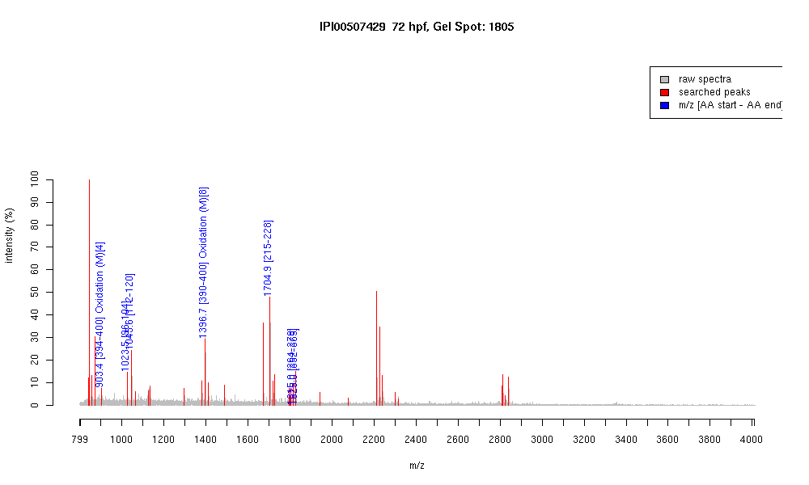

IPI00507429 :: Gel Spot=1805
| Name | "Tubulin, alpha 3" |
|---|
| MW | 50182.4 |
|---|
| PI | 4.97 |
|---|
| Mascot Protein Score | 74 |
|---|
| Masses (matched / unmatched) | 7 / 41 |
|---|

| Peptide | MZ (calc) | MZ (observed) | Error (DA) | Error (PPM) | Start | Stop | Modifications |
|---|
| FDLMYAK | 903.428 | 903.415 | -0.013 | -14 | 394 | 400 | Oxidation (M)[4] |
| EDAANNYAR | 1023.449 | 1023.4589 | 0.0099 | 10 | 96 | 104 | |
| EIVDSVLDR | 1045.5524 | 1045.569 | 0.0166 | 16 | 112 | 120 | |
| LDHKFDLMYAK | 1396.693 | 1396.7484 | 0.0554 | 40 | 390 | 400 | Oxidation (M)[8] |
| NLDIERPSYTNLNR | 1704.8663 | 1704.8647 | -0.0016 | -1 | 215 | 228 | |
| IHFPLVTYSPIISAEK | 1815.0051 | 1814.9862 | -0.0189 | -10 | 264 | 279 | |
| VGINYQPPTVVPGGDLAK | 1824.9854 | 1824.9792 | -0.0062 | -3 | 352 | 369 | |